Simon left Brisbane late on Thursday, drove south through the night, and arrived at Minnie Water under dark sky — car-sleeping at the same coastal edge that had anchored the first trip. He woke to a clear August morning and photographed it before moving on. The plan from the earlier road journal had called this exactly: return to Minnie Water first, then turn inland.
This entry covers the real run, not the plan. The sequence is driven by what the photo archive records: four distinct locations, two days, and a route that changed character between the coast and the range.
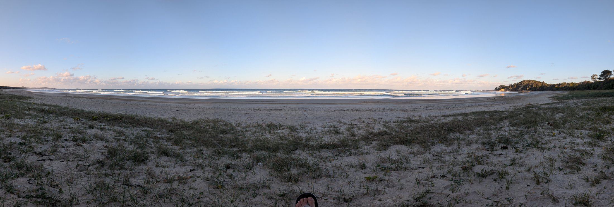
Minnie Water, the second visit
The Minnie Water photographs from this trip are different from the first set. The April images had vegetation framing the coast and a dense star field at night. The August images are a Saturday-morning beach: wide open sand, bright direct sun, and the shoreline stretching in both directions. The arrangement shows the same coastline in a different register — less about arrival, more about the start of a day that still had several hours of driving ahead.
Simon photographed the beach walk, the surf, and the morning light on the dunes. The record does not claim any specific activity or duration beyond what the metadata sequence shows: a series of photographs taken between 8:17 am and 9:53 am, then the car pointed south.
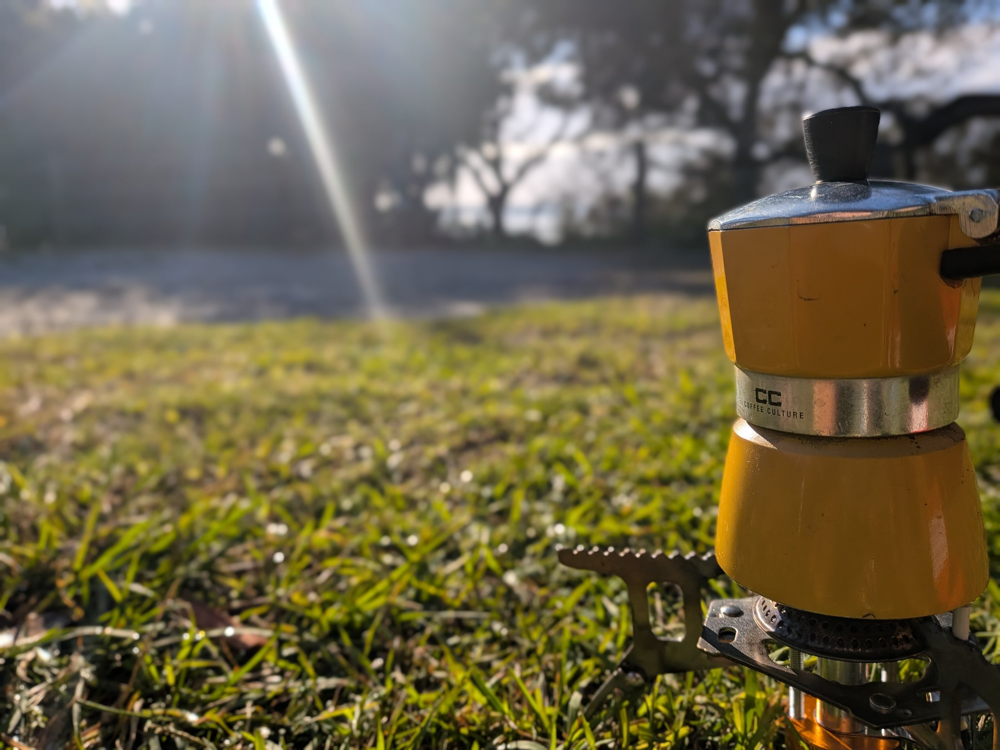
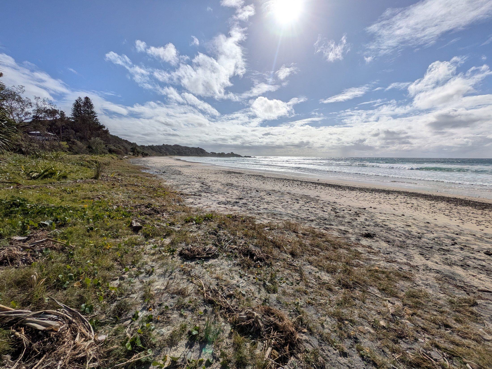
Red Rock: a coastal pause before the climb
From Minnie Water, the route continued south along the coast road to Red Rock. The photographs place Simon there between 10:58 am and 11:02 am, looking out from an elevated point across the coastline. The earlier road journal had flagged Red Rock as "a look rather than a promise to linger," and the sequence matches that exactly — two photographs, a brief stop, then the turn inland toward Dorrigo.
Red Rock sits at the mouth of the Corindi River within the Coffs Coast region. The headland view captured in the photographs shows a broad sweep of the northern NSW coastline: surf, headland, and the kind of clear winter light that makes the sea look deeper than it is.
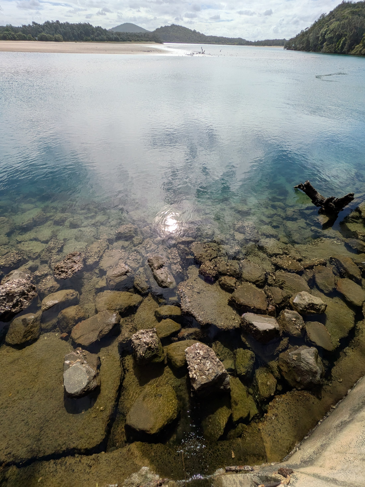
Dorrigo: where the road changes character
The earlier journal plan had described a turn inland on Waterfall Way, with the Skywalk as a sensible place to check access and Crystal Shower Falls as the intended walk if conditions allowed. The archive places Simon at the Dorrigo Rainforest Centre at 2:01 pm, then along a rainforest path shortly after.
Dorrigo National Park is part of the Gondwana Rainforests of Australia World Heritage Area.1 The Skywalk — a 70-metre boardwalk extending 21 metres above the rainforest floor — is the most immediate feature from the visitor centre. The sign at the trailhead also points to the Lyrebird Link track and the Wonga Walk, a 6.6 km circuit.
Between the coast and Dorrigo, the photo record includes a stop at what looks like Hampton Court or Thora — a grassy clearing with picnic tables, tall overhanging trees, and a small shelter. The metadata places it at 1:23 pm. This is the kind of rural rest area that a road trip accumulates: not a destination, but a necessary pause that earns its place in the sequence because it changes the visual rhythm.
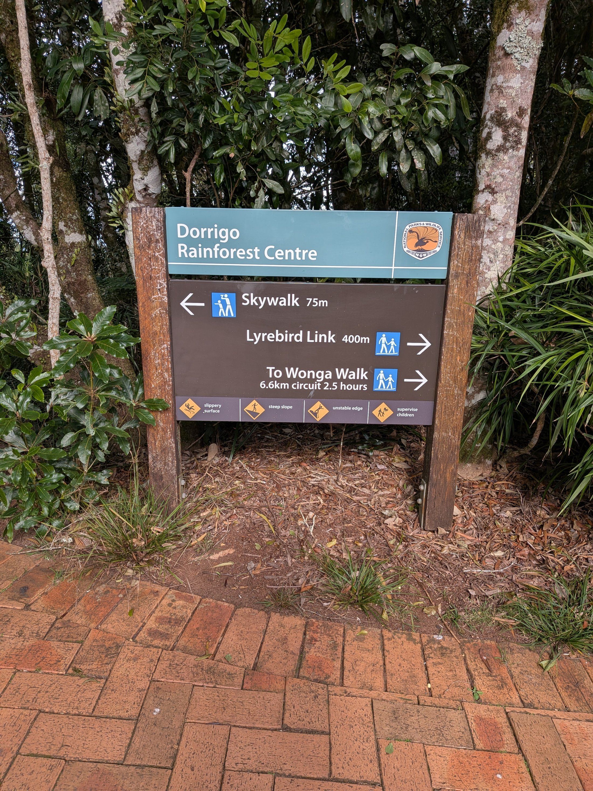
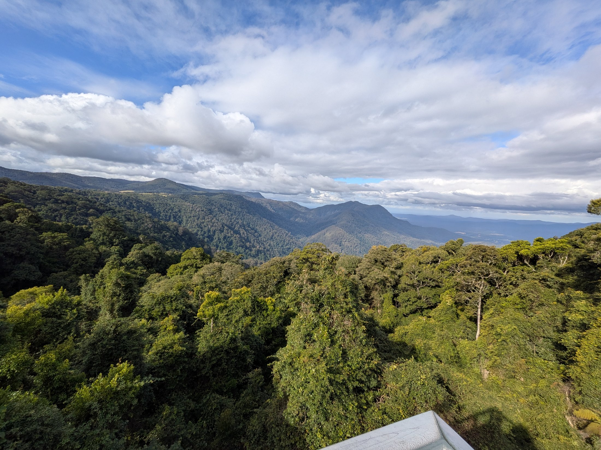
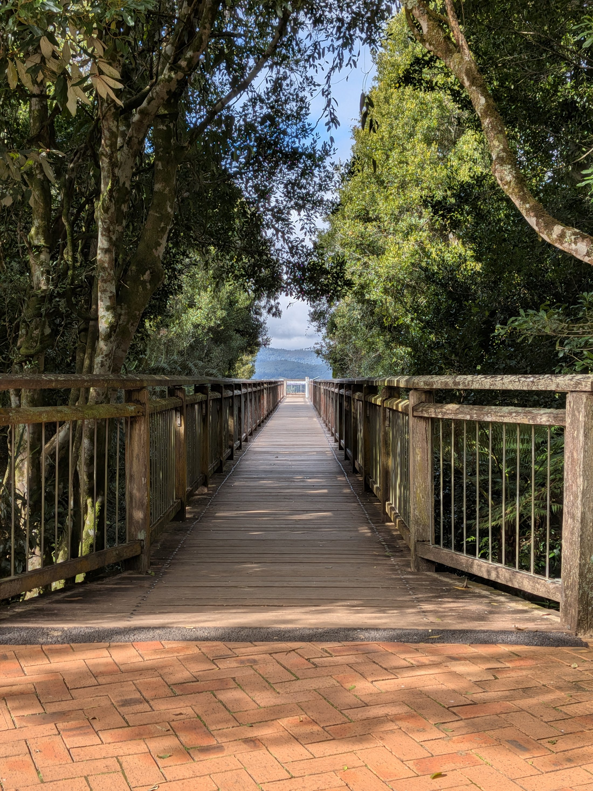
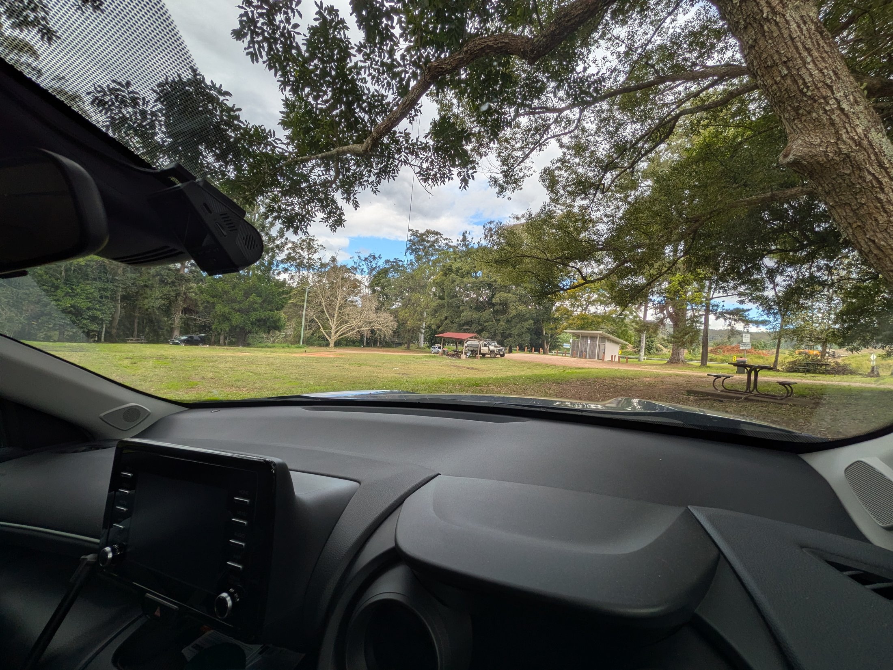
Brooms Head: a Saturday-evening club stop
By late afternoon, the route had looped back toward the coast. At 5:57 pm on Saturday, Simon was at the Brooms Head Bowling Club Ltd — the photograph shows a visitor pass, likely the practical outcome of a shower-and-food stop after the long inland drive. Brooms Head sits north of the Yuraygir National Park coastline, south of Yamba.2 The record does not expand this into a scene — the photograph captures the ticket and moves on.
Evans Head: the next morning, the coast again
Simon woke at Evans Head on Sunday morning and photographed it thoroughly: the lookout, the surf, the rock shelf, and the wide beach panorama. The photographs cover 9:25 am to 9:55 am, with the panorama taken at 9:30 am from an elevated position above the coastline.
Evans Head is one of the named stops from the first road journal, where it was described as "really nice." The August photographs support that with more material: a clear winter morning, empty beach, the coastline visible in both directions, and the kind of even light that makes a place worth revisiting.
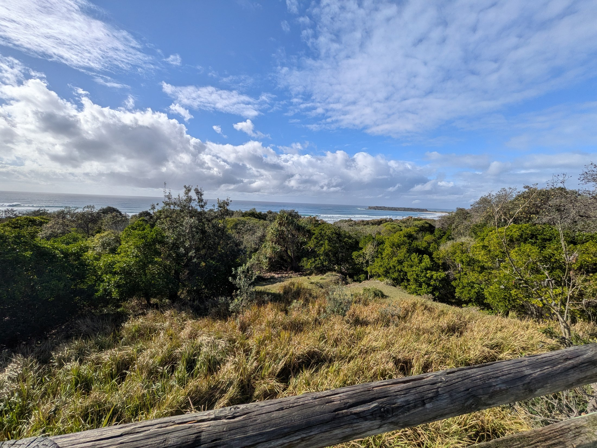
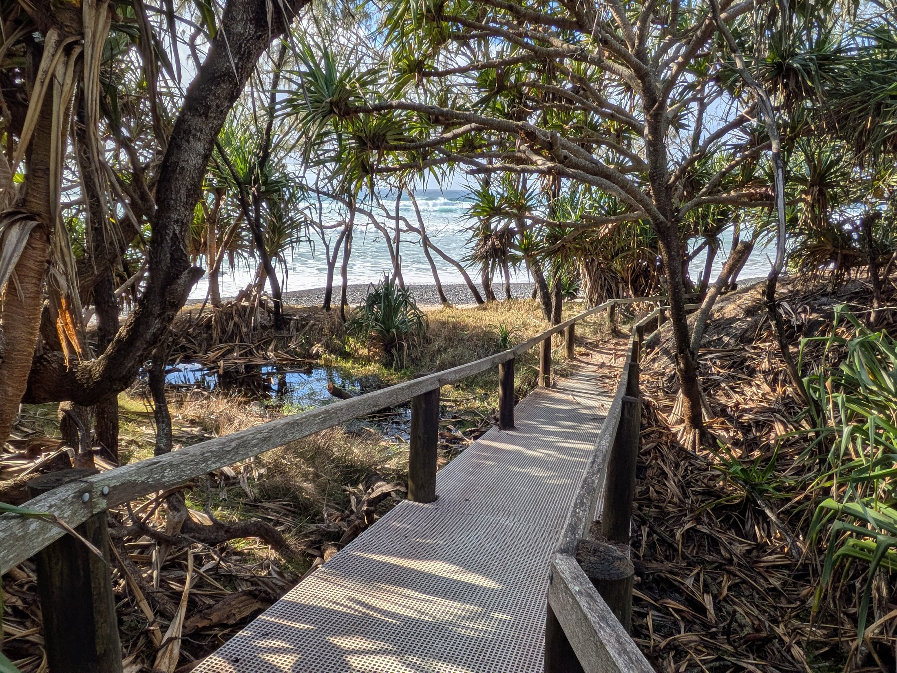
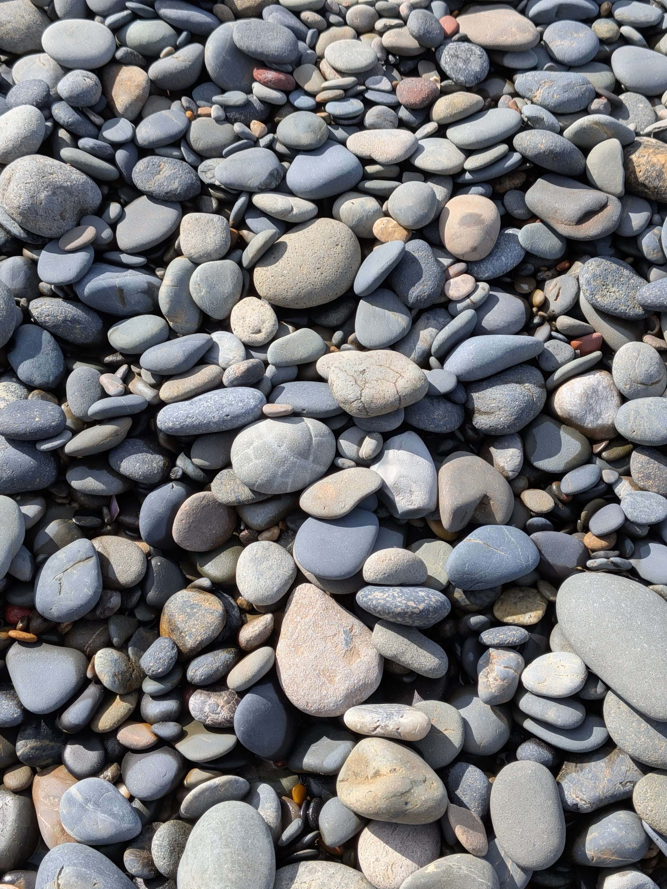
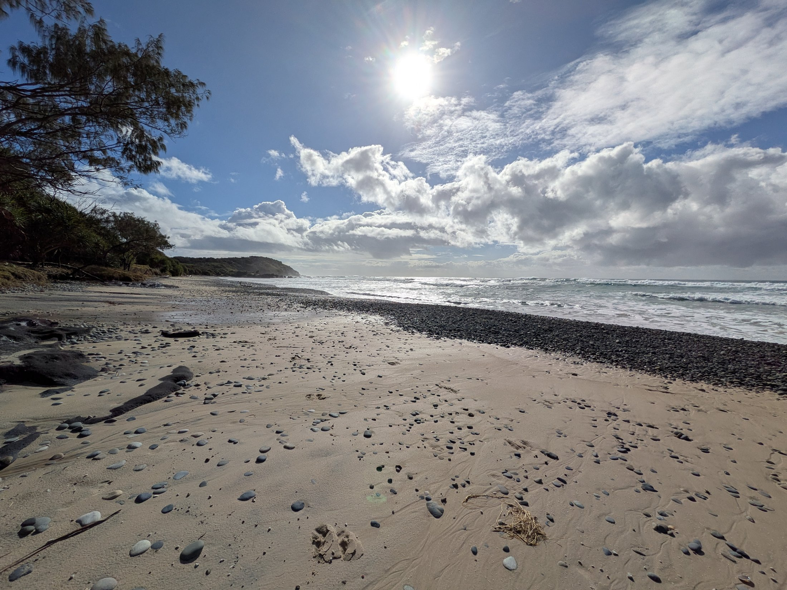
What the route did
This trip executed the plan the earlier road journal had laid out: Minnie Water → Red Rock → Dorrigo → Evans Head. It confirmed that Minnie Water held up on a second visit. It added the Dorrigo rainforest walk and the Brooms Head club stop as earned material — not planned to the minute, but recorded. The photographs now carry the route evidence for the inland segment, which the first journal entry only described as a plan.
The route ledger, updated:
- Minnie WaterReturn visit, Saturday morning. Beach walk, surf, morning light. 8:17–9:53 am.
- Red RockCoastal headland stop. A look rather than a linger. 10:58–11:02 am.
- Thora / Hampton CourtInland rest area. Grassy clearing, tall trees, a pause before the climb. 1:23 pm.
- Dorrigo National ParkRainforest Centre, Skywalk trailhead. Rainforest interior and walking track. 2:01–2:07 pm.
- Brooms HeadBowling club stop. Saturday evening, practical logistics. 5:57 pm.
- Evans HeadSunday morning. Lookout, surf, rock shelf, beach panorama. 9:25–9:55 am.
Notes
Photo provenance & sources
Privacy note. This page uses selected, reduced-size derivatives of Simon's original photographs. The copies have been exported without EXIF metadata. Exact coordinates, original photo files, and private metadata are not included. Photographs taken with a Google Pixel phone.